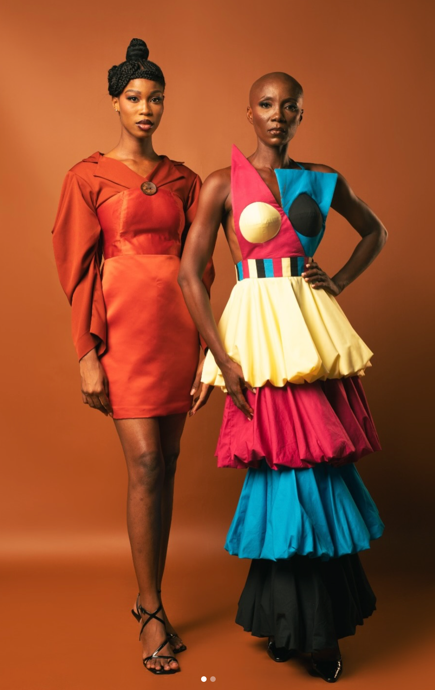
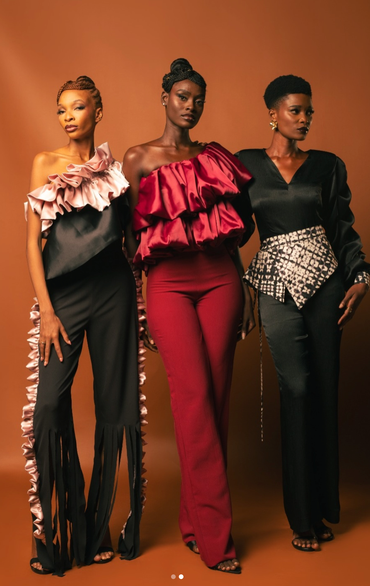
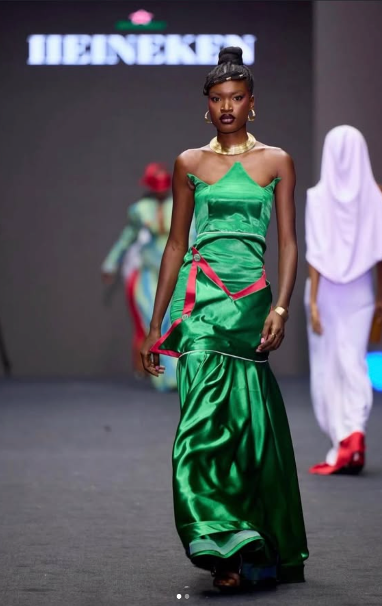
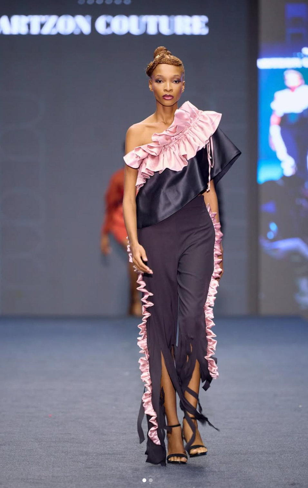
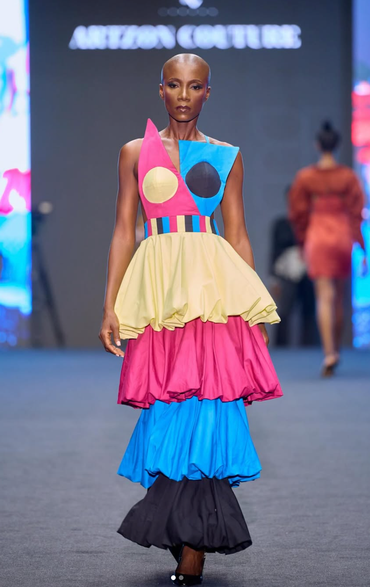
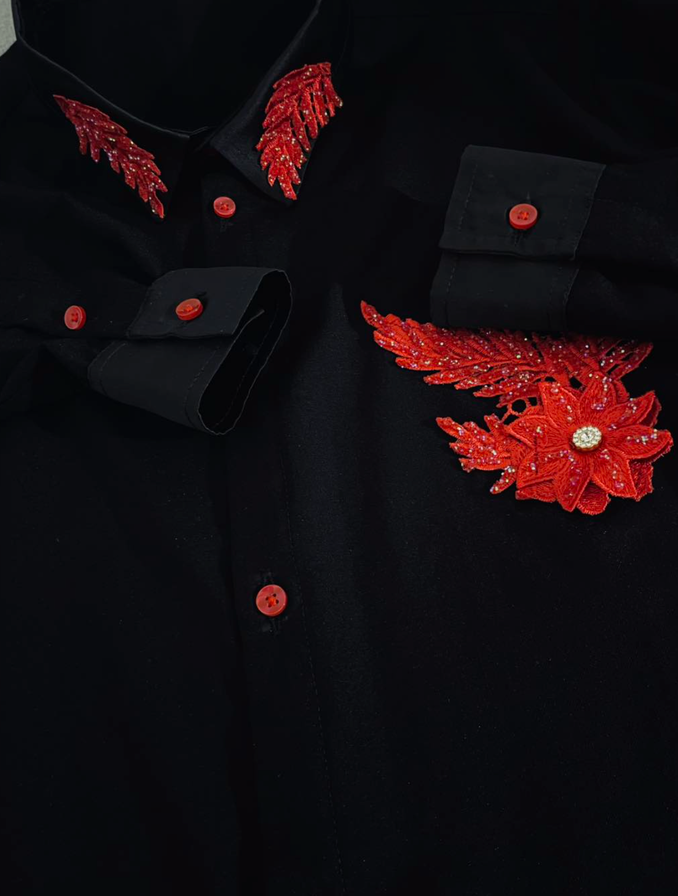
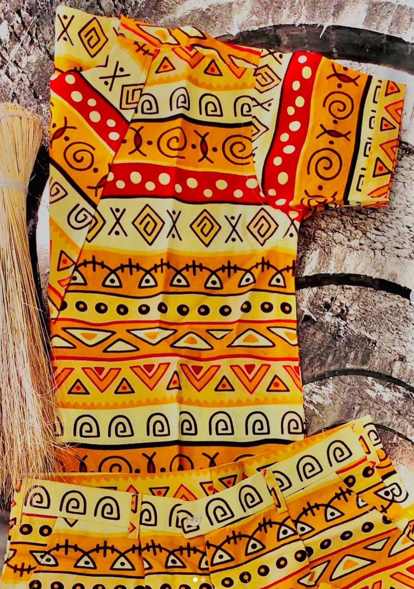

Maison de création · Abidjan
Porter
une histoire.
Des silhouettes sculptées entre héritage, couleur et mouvement.
Découvrir la collection ↘01 · LA VISION
La couture comme langage.
La culture comme matière.
ARTZON compose un vestiaire contemporain où la construction rencontre la mémoire. Volumes francs, détails faits main et couleurs assumées donnent à chaque pièce sa présence.
ABJ

ÉDITORIAL 001Pièce signature
Couleur
en mouvement
Une silhouette architecturale pensée comme une composition. Chaque étage, chaque teinte et chaque ligne participe au rythme.
Voir les pièces02 · COLLECTION
Les pièces
Une sélection de silhouettes Artzon.
Commande et disponibilité sur demande.
FAIT À ABIDJAN
Des vêtements pensés comme des objets de culture.
Silhouette Matière Mémoire Présence
« Une pièce ne doit pas seulement habiller. Elle doit rester en mémoire. »
Création contemporaine · Confection · Pièces sur demande
03 · RUNWAY
En mouvement
La collection prend sa pleine dimension lorsqu'elle marche.




ABIDJAN04 · LA MAISON
De l'idée
à l'atelier.
Le vêtement commence par un geste. Dessiner, couper, assembler, reprendre. Artzon défend une création où la main reste visible et où chaque détail a une raison d'être.
